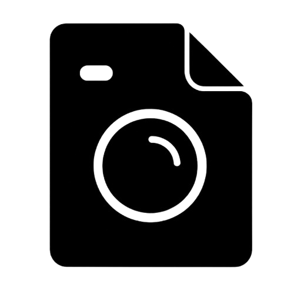
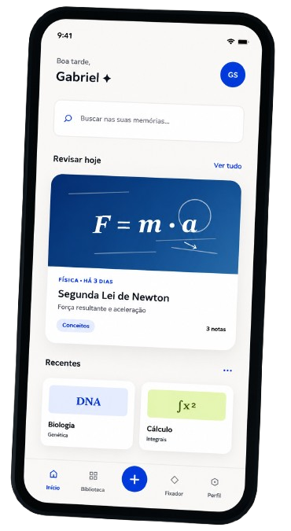
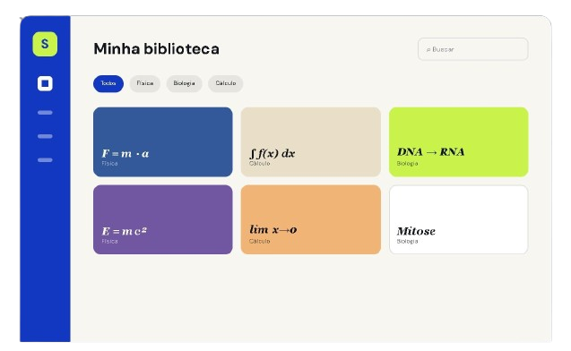
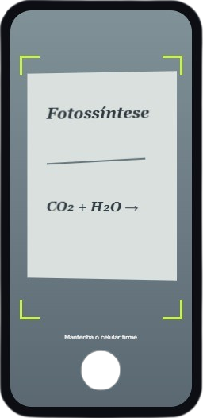
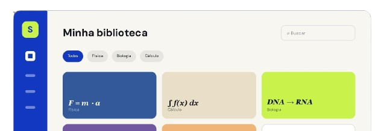

Jovens estudantes
18-30 ANOS - ENSINO TÉCNICO E SUPERIOR
Guardam lousas, exercícios e slides no celular, estudam entre aulas e precisam revisar conteúdos com agilidade.
- Rotina Acadêmica Intesa
- Grande Volume de Registros
- Busca Rápida antes de Provas

SnapNote
Da Foto à Memória, sem perder o contexto
O SnapNote transforma fotos de lousas, cadernos e slides em registros organizados, pesquisáveis e prontos para a sua próxima revisão.
Menos
tempo buscando
Mais
contexto preservado
Sempre
pronto para revisar

ideiasFísica - Cinemática
"Cai na prova de sexta!"
Fotografamos conteúdos importantes todos os dias. Depois, eles desaparecem entre prints, memes e milhares de imagens sem nome.
Uma foto sem matéria, data ou explicação vira apenas mais um arquivo.
Encontrar aquela lousa antes da prova custa tempo e concentração.
Sem lembretes e organização, conteúdos valiosos nunca são revisitados.
Uma jornada simples que transforma registros soltos em uma memória visual organizada — sem mudar o jeito natural de estudar.
Fotografe a lousa, um slide ou sua anotação diretamente pelo aplicativo.
Adicione uma frase ou grave um áudio para preservar o que aquela imagem significa.
O SnapNote identifica o tema e agrupa tudo automaticamente por matéria.
Busque em segundos e receba lembretes inteligentes antes da prova.
Reprodução Celular
Mitose
2 células
Organização Inteligente
Títulos, categorias e palavras-chave são sugeridos a partir do conteúdo da imagem e do contexto contado por você.
Organização automática por matéria
Busca por palavras e contexto
Revisões no momento certo
O SnapNote apoia pessoas que usam o celular para registrar informações importantes e precisam recuperar o significado delas depois.
"Eu sei que fotografei. Só não lembro onde — nem por quê.
JV
USUÁRIO PRINCIPAL
18-30 ANOS - ENSINO TÉCNICO E SUPERIOR
Guardam lousas, exercícios e slides no celular, estudam entre aulas e precisam revisar conteúdos com agilidade.
LP
USUÁRIO SECUNDÁRIO
CURSOS - PALESTRAS - REUNIÕES
Registram quadros, apresentações e referências visuais para consultar em projetos e compartilhar aprendizados.
Interface pensada para ser funcional, rápida e sem distrações.

01
Tudo organizado por matérias e contexto.

03
O conteúdo certo, na hora certa.

02
Um bom registro desde o primeiro clique.
Organização
Registros agrupados e renomeados com certeza.
Retenção
Revisões frequentes ajudam o conteúdo a permanecer.
Produtividade
Informação reencontrada em segundos, não em horas.
NOSSA EQUIPE
EQUIPE SNAPNOTE · RM573764
EQUIPE SNAPNOTE · RM573697
EQUIPE SNAPNOTE · RM570982
EQUIPE SNAPNOTE · RM572419
EQUIPE SNAPNOTE · RM571846
CONTATO
Quer conhecer melhor o projeto ou compartilhar uma ideia? Fale com a nossa equipe.
equipe@snapnote.com ↗